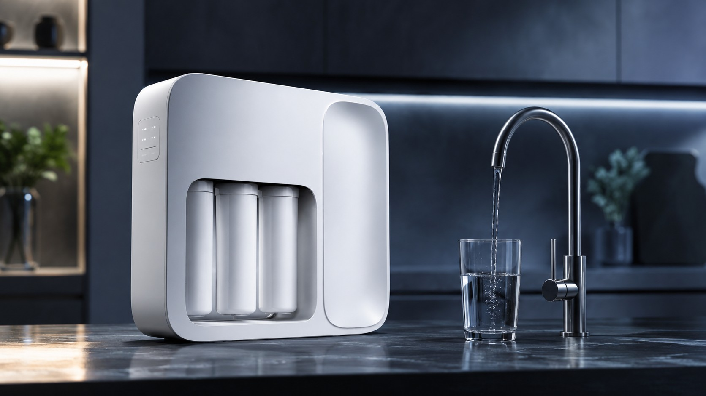
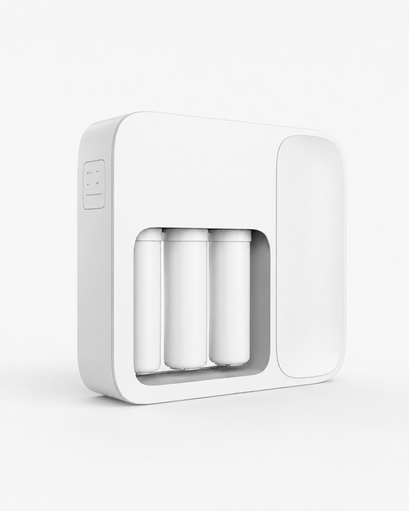
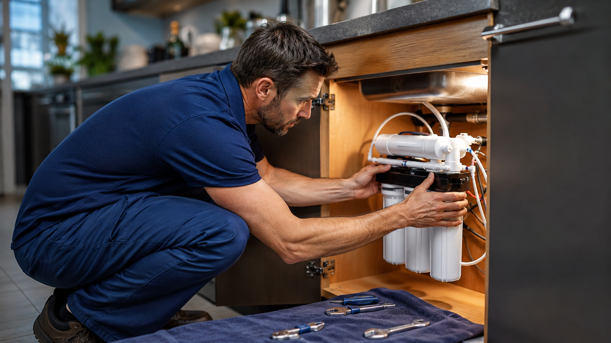
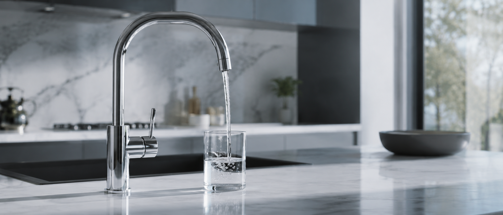
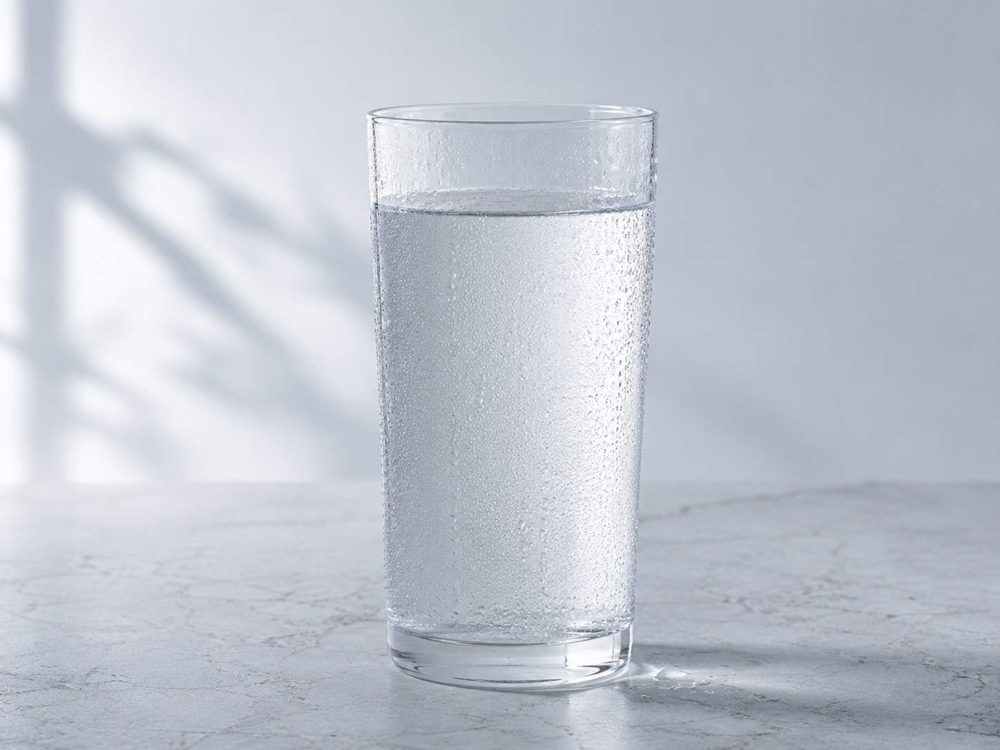

Salud en cada gota
Agua pensada para consumo familiar, preparación de alimentos y rutinas donde la calidad importa todos los días.

Alquiler mensual de equipos de ósmosis inversa
No comprás el equipo: lo alquilás con instalación, soporte y mantenimiento incluidos. El sistema de ósmosis inversa Hidrotack transmuta el agua de tu canilla en agua pura, eliminando arsénico, cloro, sarro y exceso de minerales. Es el fin de los bidones: empezá a consumir agua de una calidad superior.
Solución para zonas donde la calidad del agua requiere tratamiento serio.
Mejor sabor, menos olor y agua más agradable para tomar y cocinar.
Ayuda a reducir sarro y exceso de minerales en el consumo diario.
Por qué elegir Hidrotack
El modelo es simple: Hidrotack instala un equipo de ósmosis inversa en tu cocina y vos pagás un alquiler mensual fijo. Sin comprar el equipo, sin cargar peso, sin quedarte sin stock y sin acumular plástico.
Agua pensada para consumo familiar, preparación de alimentos y rutinas donde la calidad importa todos los días.
Nos encargamos de instalar el equipo alquilado y cambiar filtros dos veces al año, según especificaciones del fabricante.
Un abono fijo, comparable a lo que ya gastás en bidones, pero sin compra inicial y con agua disponible cuando la necesitás.
Llegamos a distintas localidades del país. Consultanos disponibilidad y coordinamos la visita técnica.
Pensado para tu familia
Hidrotack está pensado para hogares que quieren simplificar el día a día sin resignar tranquilidad: agua filtrada para tomar, cocinar, preparar infusiones y acompañar la hidratación de los chicos.
Agua de mejor sabor disponible todo el día, sin depender de botellas ni bidones.
Ideal para hervir, preparar leche, mate, café, sopas y comidas familiares.
Una solución práctica para reducir cloro, sarro, arsénico y exceso de minerales.
Equipos en alquiler para tu cocina
Podés elegir un equipo de ósmosis inversa sobre mesada, visible y de instalación práctica, o una solución bajo mesada instalada dentro del mueble. En ambos casos, el alquiler mensual incluye mantenimiento.

Sobre mesadaAlquiler recomendado · Equipo principal
Se coloca sobre la mesada y entrega agua purificada mediante ósmosis inversa. Una opción compacta, visible y de acceso simple para el mantenimiento.

Bajo mesadaInstalación oculta
El sistema se instala dentro del mueble, debajo de la bacha, y se conecta a un grifo exclusivo. Ideal para mantener la mesada despejada.
Alquiler de equipos
Reemplazá el gasto variable en bidones por un alquiler mensual fijo que incluye el equipo de ósmosis inversa, la instalación y el mantenimiento programado. Sin compra inicial, sin letra chica, sin sorpresas.

Sobre mesada · S01
Instalación rápida, agua pura desde el primer día.
Bajo mesada · Instalación oculta
La solución completa: oculta, elegante y con membrana certificada.
Bajo mesada · Máxima pureza
Para hogares con agua dura o arsénico elevado. Filtrado reforzado.
* Los planes corresponden al alquiler mensual del equipo. No tienen permanencia mínima y el valor se ajusta según localidad y costo de instalación. Consultanos para tu caso particular.
Cómo funciona
Te ayudamos a elegir entre el equipo S01 sobre mesada o el sistema instalado bajo mesada.
Coordinamos la visita técnica y dejamos el equipo en funcionamiento en tu domicilio.
Tenés agua limpia las 24 horas con un abono fijo, sin comprar el equipo y sin cargar bidones.
Cambiamos filtros cada 6 meses para cuidar el rendimiento óptimo del sistema alquilado.
Tecnología para problemas reales
La ósmosis inversa es una tecnología de filtrado avanzada que empuja el agua a través de una membrana semipermeable para reducir sales, partículas y ciertos contaminantes disueltos. En zonas críticas recomendamos complementar la instalación con análisis de agua y asesoramiento técnico.
Certificaciones del sistema
Hidrotek declara certificaciones y estándares según línea y componente. El punto fuerte comercial es la membrana RO certificada bajo NSF 58.
Certificación clave para membranas RO, asociada al rendimiento de reducción de sólidos disueltos y contaminantes específicos según ensayo.
Marcado declarado para equipos completos de la línea Hidrotek, según modelo.
Respaldo aplicable a productos eléctricos y materiales controlados, según versión.
Estándar del fabricante que acompaña el enfoque sustentable del servicio.
Preguntas frecuentes

Es un proceso que usa una membrana especial para separar gran parte de las sales, minerales y sustancias no deseadas del agua. El resultado es agua más pura, de mejor sabor y apta para el consumo cotidiano.
Sí. El abono contempla el mantenimiento programado y el cambio de filtros dos veces al año, de acuerdo con las especificaciones del fabricante y el uso del equipo. Sin costos sorpresa.
La ósmosis inversa puede reducir significativamente el arsénico y otros sólidos disueltos. La eficacia depende de la calidad inicial del agua, el equipo instalado y el mantenimiento, por eso recomendamos validar cada caso con asesoramiento técnico.
El equipo sobre mesada queda visible y permite un acceso práctico. El sistema bajo mesada se instala dentro del mueble y utiliza un grifo exclusivo, por lo que deja libre la superficie de trabajo.
Se alquila. La propuesta de Hidrotack es un alquiler mensual del equipo: pagás un abono fijo y nosotros nos ocupamos de la instalación, el soporte y el mantenimiento programado.
Incluye el equipo de ósmosis inversa, la instalación coordinada, el cambio de filtros semestral y el acompañamiento técnico para mantener el sistema funcionando correctamente.
Cada 6 meses, según las especificaciones del fabricante Hidrotek. La visita técnica queda coordinada por nosotros y no genera costo adicional fuera del abono mensual.
Sumate a la revolución del agua limpia
Ganá salud, comodidad y espacio en tu hogar con la tecnología de Hidrotack S.A. Dejanos tus datos y coordinamos el asesoramiento para alquilar el equipo ideal en tu localidad.